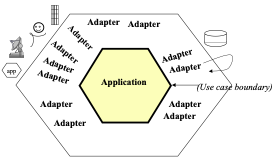
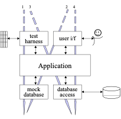

Organizar el código
De la vista gorda a puertos y adaptadores
Arquitecturas Web · Leonel Viera
Universidad Nacional de Tierra del Fuego, A. e I.A.S.
Hoja de ruta
el dolor, la red de seguridad, cuatro capas
inversión, hexágono, notificar, persistir, CLI, regla como test
monolito modular (conceptual + rama opcional)
límites y consigna
Un repo, una rama por paso. Cada rama sale de la anterior, tiene un commit chico y los
tests de contrato pasan en todas. Además: opcional-monolito-modular y
ejercicio-cancelar-consultar.
A dónde llegamos 🛠 H2 · solo mirar
- backend/activities/
- composition.py
- models.py
- domain/
- modelos.py
- reglas.py
- errores.py
- application/
- puertos.py
- dto.py
- inscribir.py
- infrastructure/
- db/repositorio_django.py
- notificaciones/smtp.py
- notificaciones/memoria.py
- notificaciones/fallo.py
- presentation/http/
- views.py
- serializers.py
- urls.py
- management/commands/
- inscribir.py
- tests/
- test_contrato_api.py
- test_reglas.py · test_inscribir.py · fakes.py
No hace falta entenderlo hoy: es el mapa.
Cómo seguir la clase
- Puntitos e00 … e14: la rama en la que estamos va en rojo.
- P1 P2 P3: tres preguntas; ☐ abierta · ◐ a medias · ☑ resuelta. Aparecen recién en 1.7.
- contrato ✔: los tests de la API pasan en esa rama.
En cada slide de código vas a ver la etiqueta con el comando de la etapa (scripts/etapa.sh eNN): corrélo desde esta carpeta y las slides siguen abiertas.
El proyecto que ya conocen
activities- Actividades con cupo limitado.
- Inscripciones:
PUT/DELETE /me/enrollments/{id}. - Autenticación con JWT.
- Ya hicimos el contrato OpenAPI.
- Ya lo pusimos en Docker con Compose.
- Hoy no agregamos tecnología: agregamos orden.
Nueva funcionalidad: comprobante por correo
“Cuando alguien se inscribe, le mandamos un correo.” Sumamos Mailpit, un servidor SMTP de
prueba, al compose.yaml:
Maqueta ilustrativa de la bandeja; en vivo se ve la real.
¿Dónde lo pusimos? Anatomía de la vista
put()
def put(self, request, activity_id):
activity_id = parse_activity_id(activity_id)
if activity_id is None:
return Response(REQUEST_NOT_VALID, status=status.HTTP_400_BAD_REQUEST)
participant = current_participant(request.user)
if request.body:
return Response(INVALID_REQUEST, status=status.HTTP_400_BAD_REQUEST)
with transaction.atomic():
try:
activity = Activity.objects.select_for_update().get(id=activity_id)
except Activity.DoesNotExist:
return Response(
ACTIVITY_NOT_FOUND,
status=status.HTTP_404_NOT_FOUND,
)
enrollment = Enrollment.objects.filter(
participant=participant,
activity=activity,
).first()
if enrollment is not None:
return Response(EnrollmentOutSerializer(enrollment).data)
if activity.enrollments.count() >= activity.capacity:
return Response(
CAPACITY_EXHAUSTED,
status=status.HTTP_409_CONFLICT,
)
enrollment = Enrollment.objects.create(
participant=participant,
activity=activity,
)
send_enrollment_confirmation(request.user, activity)
return Response(
EnrollmentOutSerializer(enrollment).data,
status=status.HTTP_201_CREATED,
)- Parsear el UUID de la URL.
- Identidad del participante y body vacío.
- Transacción y bloqueo de la actividad.
- Regla: si ya estaba inscripto, no repetir.
- Regla: si no hay cupo, rechazar.
- Crear la inscripción.
- Enviar el correo (
emails.py). - Respuesta HTTP 201.
def send_enrollment_confirmation(user, activity):
recipient = (getattr(user, "email", None) or "").strip()
if not recipient:
logger.warning(
"No se envió email de inscripción: el usuario %s no tiene email.",
getattr(user, "username", user),
)
return
subject = f"Inscripción confirmada: {activity.title}"
body = (
f"Hola {user.get_full_name() or user.username},\n\n"
f"Tu inscripción a «{activity.title}» quedó confirmada.\n"
f"Inicio: {activity.starts_at.isoformat()}\n\n"
"Arquitecturas Web — UNTDF\n"
)
try:
send_mail(
subject,
body,Una responsabilidad es una pregunta que el código responde
return Response(REQUEST_NOT_VALID, status=status.HTTP_400_BAD_REQUEST)¿Qué devuelvo si el UUID es inválido?una pregunta sobre HTTP
if activity.enrollments.count() >= activity.capacity:¿Se puede inscribir si ya no hay cupo?una pregunta sobre el negocio
send_mail(
subject,
body,
settings.DEFAULT_FROM_EMAIL,
[recipient],
fail_silently=False,
)¿Cómo le hablo al servidor de correo (Mailpit)?una pregunta sobre un mecanismo
Si una función responde preguntas de naturaleza distinta, cualquier cambio en una de ellas obliga a tocarla.
Cuatro preguntas para clasificar cada línea
| Capa | La pregunta | Pistas en el código | Una línea real de put() |
|---|---|---|---|
| presentación | ¿Cómo entra el pedido y cómo sale la respuesta? | request, Response, status, serializers, parsear la URL |
return Response(REQUEST_NOT_VALID, status=status.HTTP_400_BAD_REQUEST) |
| aplicación | ¿En qué orden se hacen los pasos? | transacción, “primero… después…”, llamar a otras partes | send_enrollment_confirmation(request.user, activity) |
| dominio | ¿Qué regla del negocio se cumple, sin importar la tecnología? | cupo, duplicados: condiciones que un humano entiende sin código | if activity.enrollments.count() >= activity.capacity: |
| infraestructura | ¿Con qué tecnología concreta? | ORM, send_mail, settings, SQL |
activity = Activity.objects.select_for_update().get(id=activity_id) |
Ojo: una línea puede mezclar dos. La condición de cupo es una regla (dominio) que usa el ORM para contar (infraestructura): esa mezcla también es una señal.
Una capa es un tipo de responsabilidad: no es una carpeta ni un servidor (lo vemos en el bloque 2).
Coloreá la vista gorda 🛠 H1
Tres preguntas que esta vista no puede responder
Quedan fijas en el minimapa (arriba a la derecha) hasta el final: cada rama que las resuelve las tilda.
Vocabulario
Arquitectura, cohesión, acoplamiento y dos ejes para cortar un sistema
Qué es arquitectura (y qué es diseño)
Sistema
Componente
activitiesvistas · modelos · correoColaboración
put()emails.pyArquitectura = las decisiones caras de cambiar sobre las partes, sus responsabilidades y sus dependencias.
Diseño: decisiones más baratas dentro de una parte (el nombre de una función, un algoritmo, el orden de dos líneas).
Patrones, principios, técnicas y criterios
| Es un… | Término | Responde a |
|---|---|---|
| Patrón | Capas · Puertos y adaptadores | ¿Cómo organizo el código? |
| Organización | Monolito modular | ¿Qué límites internos tiene un único deploy? |
| Principio | DIP · inversión de dependencias | ¿De qué depende cada parte? |
| Técnica | DI · inyección de dependencias | ¿Cómo le llega a una parte lo que necesita? |
| Criterios | Cohesión · acoplamiento | ¿Esta organización es buena o mala? |
Clean Architecture y Onion son parientes de puertos y adaptadores (dependencias hacia el centro): no son sinónimos.
Cohesión: lo que cambia junto, vive junto
“Inscribir”: coherente
- Regla de duplicado
- Regla de cupo
- Crear la inscripción
put() de e01: hace de todo
- Parsear el UUID y armar la respuesta HTTP
- Transacción y bloqueo
- Regla de cupo
- Disparar el correo (
emails.py)
La regla de cupo cambia por razones del negocio; el asunto del correo, por razones de comunicación. Hoy se tocan en el mismo flujo.
Acoplamiento: qué necesita saber una parte de otra
| Qué sabe | Pregunta | En nuestro código (e01) |
|---|---|---|
| Formato | ¿En qué forma viaja el dato? | emails.py espera user.email como texto y llama a activity.starts_at.isoformat() |
| Modelo | ¿Qué conceptos comparten? | La vista y emails.py conocen los modelos Django Activity y Enrollment |
| Configuración | ¿Qué ajustes externos necesita? | El envío depende de EMAIL_HOST, EMAIL_PORT y EMAIL_BACKEND; la vista los conoce indirectamente |
| Comportamiento | ¿Qué hace la otra parte? (bloquea, falla) | send_mail bloquea la petición hasta que SMTP responde; si falla, emails.py registra el error y la vista responde 201 igual |
Menos acoplamiento = menos cosas que una parte necesita saber de la otra.
Capa ≠ tier
Capas: cómo se organiza el código
Tiers: dónde corre cada cosa
backenddbmailpitCapa = organización lógica del código. Tier = proceso o máquina donde corre. Nuestras cuatro capas viven dentro de un mismo proceso (el backend).
Dos ejes: horizontal y vertical
ActivityListViewEnrollmentDetailViewActivityEnrollmentHorizontal (capas): cortamos por tipo de responsabilidad. Es el eje del recorrido principal.
Vertical (módulos): cortamos por capacidad del negocio. Un deploy, límites internos: monolito modular.
Primero recorremos el eje horizontal; al final volvemos al vertical.
Red de seguridad
Antes de mover código, fijamos lo que hace hoy
Refactorizar: cambiar la estructura, no el comportamiento
Los tests de contrato ya existen (test_put_creates_an_idempotent_enrollment, …). En e02
sumamos 3 tests del correo con el backend locmem: solo cambia tests.py (+50 −1).
@override_settings(EMAIL_BACKEND=LOCMEM_EMAIL)
def test_put_sends_email_only_when_enrollment_is_created(self):
self.user.email = "ada@example.com"
self.user.save(update_fields=["email"])
created_response = self.client.put(self.enrollment_url, **self.headers)
repeated_response = self.client.put(self.enrollment_url, **self.headers)
self.assertEqual(created_response.status_code, 201)
self.assertEqual(repeated_response.status_code, 200)
self.assertEqual(len(mail.outbox), 1)
self.assertEqual(mail.outbox[0].to, ["ada@example.com"])
self.assertIn(self.activity.title, mail.outbox[0].subject)
@override_settings(EMAIL_BACKEND=LOCMEM_EMAIL)
def test_put_without_user_email_enrolls_without_sending(self):
response = self.client.put(self.enrollment_url, **self.headers)
self.assertEqual(response.status_code, 201)
self.assertEqual(len(mail.outbox), 0)
@override_settings(
EMAIL_BACKEND="activities.tests.FailingEmailBackend",
)
def test_put_keeps_the_enrollment_when_email_fails(self):
self.user.email = "ada@example.com"
self.user.save(update_fields=["email"])
with self.assertLogs("activities", level="ERROR"):
response = self.client.put(self.enrollment_url, **self.headers)
self.assertEqual(response.status_code, 201)
self.assertTrue(
Enrollment.objects.filter(
participant=self.participant,
activity=self.activity,
).exists()
)- Cambiamos el backend de correo por
locmem: los mensajes quedan enmail.outbox. - Mismo PUT dos veces, por la API real.
- El efecto observable: un solo correo, al destinatario, con el título.
- Sin email de usuario: se inscribe y no se envía nada.
- SMTP caído (
FailingEmailBackend): la inscripción se mantiene.
class FailingEmailBackend(BaseEmailBackend):
"""Simula un servidor SMTP caído."""
def send_messages(self, email_messages):
raise ConnectionRefusedError("SMTP no disponible")Correr la red
- 14 tests: 11 de la API + 3 del correo.
- Aparece el badge contrato ✔ en el minimapa (arriba a la derecha).
- Los 14 tests de contrato no cambian de acá en adelante; cada rama los tiene que pasar.
Tiempo de ejemplo medido localmente; en el contenedor puede variar.
Capas, paso a paso
Cuatro ramas chicas, cada una con un único movimiento
De las cuatro preguntas a cuatro capas
El put() de e01 coloreado con la propuesta de la actividad (1.6): cuatro colores en una sola función.
Son las mismas cuatro preguntas de 1.5: ahora cada una va a tener su lugar en el código.
Paso 1: un caso de uso
Movemos el cuerpo del put() a application/inscribir.py. La vista queda llamando a
inscribir(participant, activity_id): views.py −32 +15 · inscribir.py +39.
Anatomía del caso de uso (v1)
from dataclasses import dataclass
from django.db import transaction
from ..emails import send_enrollment_confirmation
from ..models import Activity, Enrollment
@dataclass
class ResultadoInscripcion:
# "creada", "existente", "actividad_inexistente" o "sin_cupo"
estado: str
inscripcion: Enrollment | None = None
def inscribir(participante, actividad_id):
with transaction.atomic():
try:
actividad = Activity.objects.select_for_update().get(id=actividad_id)
except Activity.DoesNotExist:
return ResultadoInscripcion("actividad_inexistente")
inscripcion = Enrollment.objects.filter(
participant=participante,
activity=actividad,
).first()
if inscripcion is not None:
return ResultadoInscripcion("existente", inscripcion)
if actividad.enrollments.count() >= actividad.capacity:
return ResultadoInscripcion("sin_cupo")
inscripcion = Enrollment.objects.create(
participant=participante,
activity=actividad,
)
send_enrollment_confirmation(participante.user, actividad)
return ResultadoInscripcion("creada", inscripcion)- Recibe datos (
participante,actividad_id), no un request. - Transacción y bloqueo de la actividad.
- Reglas: actividad inexistente, duplicado, cupo.
- Crea la inscripción.
- Notifica: todavía
emails.py→send_mail. - Devuelve un
ResultadoInscripcioncon unestadoen texto.
Problema: ¿cómo devuelve el 409? Hoy con un texto ("sin_cupo") que la vista tiene que interpretar.
Paso 2: la aplicación habla en errores, la vista en HTTP
class ActividadNoEncontrada(Exception):
"""La actividad pedida no existe."""
class CupoAgotado(Exception):
"""La actividad no tiene lugares disponibles.""" if actividad.enrollments.count() >= actividad.capacity:
raise CupoAgotado() def put(self, request, activity_id):
activity_id = parse_activity_id(activity_id)
if activity_id is None:
return Response(REQUEST_NOT_VALID, status=status.HTTP_400_BAD_REQUEST)
participant = current_participant(request.user)
if request.body:
return Response(INVALID_REQUEST, status=status.HTTP_400_BAD_REQUEST)
try:
resultado = inscribir(participant, activity_id)
except ActividadNoEncontrada:
return Response(ACTIVITY_NOT_FOUND, status=status.HTTP_404_NOT_FOUND)
except CupoAgotado:
return Response(CAPACITY_EXHAUSTED, status=status.HTTP_409_CONFLICT)
status_code = (
status.HTTP_201_CREATED if resultado.creada else status.HTTP_200_OK
)
return Response(
EnrollmentOutSerializer(resultado.inscripcion).data,
status=status_code,
)- Parsear el UUID.
- Identidad y body vacío.
- Llamar al caso de uso.
- Traducir el error:
CupoAgotado→ 409,ActividadNoEncontrada→ 404. - Traducir el resultado: 201 si se creó, 200 si ya existía.
Paso 3: reglas de dominio
from .errores import CupoAgotado
def hay_cupo(capacidad: int, inscriptos: int) -> bool:
return inscriptos < capacidad
def exigir_cupo(capacidad: int, inscriptos: int) -> None:
if not hay_cupo(capacidad, inscriptos):
raise CupoAgotado()hay_cupo(capacidad, inscriptos): función pura, números adentro, booleano afuera.exigir_cupo(…): lanzaCupoAgotadosi no hay lugar.- Los errores se mudaron de
application/adomain/errores.py: son conceptos del negocio.
class ReglaDeCupoTests(SimpleTestCase):
"""Reglas puras: no necesitan base de datos, HTTP ni SMTP."""
def test_hay_cupo_mientras_queden_lugares(self):
self.assertTrue(hay_cupo(capacidad=2, inscriptos=1))
def test_no_hay_cupo_cuando_se_completa(self):
self.assertFalse(hay_cupo(capacidad=2, inscriptos=2))
def test_una_actividad_sin_capacidad_nunca_tiene_cupo(self):
self.assertFalse(hay_cupo(capacidad=0, inscriptos=0))P1 pasa a ◐: la regla de cupo ya se prueba sin HTTP, sin base de datos y sin SMTP. Falta poder probar el caso de uso completo.
Paso 4: carpetas por capa
- application/
- inscribir.py
- domain/
- errores.py
- reglas.py
- infrastructure/
- email.py
- management/
- commands/
- seed_activities.py
- commands/
- presentation/
- http/
- serializers.py
- urls.py
- views.py
- http/
- tests/
- test_contrato_api.py
- test_reglas.py
- admin.py
- apps.py
- models.py
- backend/activities/
- composition.py
- models.py
- domain/
- modelos.py
- reglas.py
- errores.py
- application/
- puertos.py
- dto.py
- inscribir.py
- infrastructure/
- db/repositorio_django.py
- notificaciones/{smtp,memoria,fallo}.py
- presentation/http/
- views.py · serializers.py · urls.py
- management/commands/
- inscribir.py
- tests/
- test_contrato_api · test_reglas · test_inscribir · fakes
Ya se parece al destino. Falta: puertos, adaptadores, composición y un dominio puro.
Anatomía de la vista delgada
def put(self, request, activity_id):
activity_id = parse_activity_id(activity_id)
if activity_id is None:
return Response(REQUEST_NOT_VALID, status=status.HTTP_400_BAD_REQUEST)
participant = current_participant(request.user)
if request.body:
return Response(INVALID_REQUEST, status=status.HTTP_400_BAD_REQUEST)
try:
resultado = inscribir(participant, activity_id)
except ActividadNoEncontrada:
return Response(ACTIVITY_NOT_FOUND, status=status.HTTP_404_NOT_FOUND)
except CupoAgotado:
return Response(CAPACITY_EXHAUSTED, status=status.HTTP_409_CONFLICT)
status_code = (
status.HTTP_201_CREATED if resultado.creada else status.HTTP_200_OK
)
return Response(
EnrollmentOutSerializer(resultado.inscripcion).data,
status=status_code,
)- Parsear la entrada: el UUID de la URL.
- Identidad del participante y body vacío.
- Llamar al caso de uso, con datos simples.
- Traducir el error a un código HTTP.
- Traducir el resultado a una respuesta.
Esto es un adaptador de entrada, aunque todavía no le pusimos nombre.
¿Hacia dónde apuntan los imports? 🛠 H4
Lo que sigue doliendo
send_mail (vía infrastructure/email.py) y el ORM.Inscribir hace falta una base y un backend de correo.Punto de control: capas
Un machete y una pregunta para la segunda parte
Machete de capas 📸
| Capa | La pregunta | Archivo en e06 | Un ejemplo |
|---|---|---|---|
| presentación | ¿Cómo entra el pedido y cómo sale la respuesta? | presentation/http/views.pyserializers.py · urls.py |
except CupoAgotado: |
| aplicación | ¿En qué orden se hacen los pasos? | application/inscribir.py |
def inscribir(participante, actividad_id): |
| dominio | ¿Qué regla del negocio vale? | domain/reglas.pydomain/errores.py |
def exigir_cupo(capacidad: int, inscriptos: int) -> None: |
| infraestructura | ¿Con qué tecnología concreta? | infrastructure/email.pymodels.py (el ORM) |
from django.core.mail import send_mail |
Los tests de contrato (tests/test_contrato_api.py) ven la API desde afuera y no cambian.
¿Y si la aplicación no dependiera de SMTP, sino al revés?
Lectura sugerida: Alistair Cockburn, Hexagonal Architecture (secciones 1 y 2)
alistair.cockburn.us/hexagonal-architecture
Recapitular
Dónde quedamos y qué falta para llegar al destino
Dónde quedamos 🛠 H2
- application/
- dto.py
- inscribir.py
- puertos.py
- domain/
- errores.py
- modelos.py
- reglas.py
- infrastructure/
- db/
- repositorio_django.py
- notificaciones/
- fallo.py
- memoria.py
- smtp.py
- db/
- management/
- commands/
- inscribir.py
- seed_activities.py
- commands/
- presentation/
- http/
- serializers.py
- urls.py
- views.py
- identidad.py
- http/
- tests/
- fakes.py
- test_arquitectura.py
- test_cli.py
- test_composicion.py
- test_contrato_api.py
- test_inscribir.py
- test_reglas.py
- admin.py
- apps.py
- composition.py
- models.py
En color: ya existe en e06 · en gris: falta. Clic en un archivo o en una pieza del hexágono.
- application/
- inscribir.py
- domain/
- errores.py
- reglas.py
- infrastructure/
- email.py
- management/
- commands/
- seed_activities.py
- commands/
- presentation/
- http/
- serializers.py
- urls.py
- views.py
- http/
- tests/
- test_contrato_api.py
- test_reglas.py
- admin.py
- apps.py
- models.py
El problema, en una flecha 🛠 H4
application/inscribir.py · e06:
from django.db import transaction
from ..infrastructure.email import send_enrollment_confirmation
Aplicación → infraestructura. El negocio depende del mecanismo.
Inversión e inyección de dependencias
Dar vuelta una flecha y pasar lo que se necesita
DIP: depender de un contrato propio
Antes (e06)
El negocio depende del mecanismo.
Después (e07)
La flecha de SMTP giró: ahora apunta al contrato.
La aplicación define lo que necesita; el mecanismo se adapta a eso.
Flecha roja discontinua = dependencia de código (quién importa a quién). Esto es el principio de inversión de dependencias.
DI: recibir la implementación desde afuera
class Inscribir:
def __init__(self, notificador: Notificador):
self.notificador = notificador
def ejecutar(self, participante, actividad_id) -> ResultadoInscripcion:
with transaction.atomic():
try:
actividad = Activity.objects.select_for_update().get(id=actividad_id)
except Activity.DoesNotExist as error:
raise ActividadNoEncontrada() from error
inscripcion = Enrollment.objects.filter(
participant=participante,
activity=actividad,
).first()
if inscripcion is not None:
return ResultadoInscripcion(inscripcion, creada=False)
exigir_cupo(actividad.capacity, actividad.enrollments.count())
inscripcion = Enrollment.objects.create(
participant=participante,
activity=actividad,
)
self._notificar(participante.user, actividad)
return ResultadoInscripcion(inscripcion, creada=True)
def _notificar(self, usuario, actividad):
destinatario = (usuario.email or "").strip()
if not destinatario:
logger.warning(
"No se envió la confirmación: %s no tiene email.", usuario.username
)
return
confirmacion = ConfirmacionInscripcion(
destinatario=destinatario,
nombre=usuario.get_full_name() or usuario.username,
actividad=actividad.title,
inicia_en=actividad.starts_at,
)
try:
self.notificador.enviar(confirmacion)
except ErrorNotificacion:
# La inscripción ya quedó confirmada: el correo se pierde, pero se registra.
logger.exception("No se pudo enviar la confirmación a %s", destinatario)- El constructor recibe un
notificador: cualquier objeto conenviar(). - Lo usa sin saber quién es:
self.notificador.enviar(...). - Traduce el fallo: si el notificador falla, la inscripción queda y el error va al log.
# Por ahora la vista arma el caso de uso con su notificador.
inscribir = Inscribir(notificador=NotificadorSMTP())
resultado = inscribir.ejecutar(participant, activity_id)Un constructor alcanza. No hace falta un contenedor de DI.
DIP ≠ DI
DIP decide de qué depende una parte. DI decide cómo le llega.
| Con DI (se lo pasan por el constructor) | Sin DI (lo busca o lo crea ella) | |
|---|---|---|
| Con DIP depende de un contrato propio |
Nuestro e07: Inscribir(notificador: Notificador). |
Depende del contrato Notificador, pero lo obtiene de un global o de un registro: no lo recibe. |
| Sin DIP depende de la clase concreta |
Se inyecta, pero con el tipo concreto: Inscribir(notificador: NotificadorSMTP). Hay DI, el negocio sigue atado al mecanismo. |
Nuestro e06: importa send_enrollment_confirmation y lo llama directo. |
Se puede inyectar una clase concreta sin invertir nada. Y se puede invertir sin un framework de inyección.
Llamadas vs. dependencias 🛠 H3
Arquitectura hexagonal
Adentro y afuera, puertos y adaptadores
El problema que plantea Cockburn

alistair.cockburn.us/hexagonal-architecture.
Imagen © Alistair Cockburn, sin modificar y sin traducir, incluida como referencia didáctica (no se le atribuye una licencia abierta).
Una aplicación que solo puede usarse por su interfaz y solo funciona con su base no se puede probar ni reutilizar.
En
e01: el put().
En
e06: Inscribir importa send_mail.
Adentro y afuera
Adentro: los casos de uso y las reglas.
Afuera (entradas): HTTP, la CLI, los tests.
Afuera (salidas): la base, el correo.
La forma de hexágono no significa seis partes: es solo un dibujo con espacio para varios lados.
Puerto: un contrato en la frontera
- Lo define la aplicación, por su propósito: «notificar una confirmación».
- No dice cómo: no menciona SMTP ni correo, solo qué necesita.
- No es el puerto de red
1025de Mailpit: acá “puerto” es un punto de conexión del interior.
Entrada y salida
Entrada (driving)
Quien activa la aplicación: HTTP, la CLI, los tests.Salida (driven)
Lo que la aplicación necesita: notificar, persistir.Adaptadores
Un adaptador traduce un mecanismo a un puerto (o un puerto a un mecanismo).
Un puerto, varios adaptadores: SMTP, memoria y fallo cumplen el mismo Notificador.

Capas y hexágono no se pelean 🛠 H2 · por rol
- application/
- dto.py
- inscribir.py
- puertos.py
- domain/
- errores.py
- modelos.py
- reglas.py
- infrastructure/
- db/
- repositorio_django.py
- notificaciones/
- fallo.py
- memoria.py
- smtp.py
- db/
- management/
- commands/
- inscribir.py
- seed_activities.py
- commands/
- presentation/
- http/
- serializers.py
- urls.py
- views.py
- identidad.py
- http/
- tests/
- fakes.py
- test_arquitectura.py
- test_cli.py
- test_composicion.py
- test_contrato_api.py
- test_inscribir.py
- test_reglas.py
- admin.py
- apps.py
- composition.py
- models.py
Puerto de salida: notificar
Un contrato, tres implementaciones y un lugar donde elegir
Anatomía del puerto
from typing import Protocol
from .dto import ConfirmacionInscripcion
class ErrorNotificacion(Exception):
"""El mecanismo no pudo entregar la confirmación."""
class Notificador(Protocol):
def enviar(self, confirmacion: ConfirmacionInscripcion) -> None:
"""Entrega la confirmación o lanza ErrorNotificacion."""- El puerto: un
Protocoldefinido por la aplicación, por su propósito. - Una operación:
enviar(confirmacion) -> None. No dice cómo; el éxito es no lanzar. - El único fallo que conoce:
ErrorNotificacion. Cada adaptador traduce los suyos a este. - Datos propios: recibe una
ConfirmacionInscripcion, no un mensaje de correo.
from dataclasses import dataclass
from datetime import datetime
@dataclass(frozen=True)
class ConfirmacionInscripcion:
"""Lo que la aplicación necesita comunicar, sin detalles de correo."""
destinatario: str
nombre: str
actividad: str
inicia_en: datetimeEl caso de uso recibe el puerto
inscribir() pasa a ser la clase Inscribir: desaparece el import de send_mail (vía email.py) y aparece self.notificador.enviar(...).
Anatomía del adaptador SMTP
from smtplib import SMTPException
from django.conf import settings
from django.core.mail import send_mail
from ...application.dto import ConfirmacionInscripcion
from ...application.puertos import ErrorNotificacion
class NotificadorSMTP:
"""Implementa el puerto Notificador con el correo de Django (Mailpit en desarrollo)."""
def enviar(self, confirmacion: ConfirmacionInscripcion) -> None:
asunto = f"Inscripción confirmada: {confirmacion.actividad}"
cuerpo = (
f"Hola {confirmacion.nombre},\n\n"
f"Tu inscripción a «{confirmacion.actividad}» quedó confirmada.\n"
f"Inicio: {confirmacion.inicia_en.isoformat()}\n\n"
"Arquitecturas Web — UNTDF\n"
)
try:
send_mail(
asunto,
cuerpo,
settings.DEFAULT_FROM_EMAIL,
[confirmacion.destinatario],
fail_silently=False,
)
except (SMTPException, OSError) as error:
raise ErrorNotificacion(str(error)) from error- Implementa el puerto: tiene
enviar(confirmacion); no hereda de nada. - Traduce el DTO a asunto y cuerpo: ese formato es cosa del mecanismo.
- Usa el mecanismo:
send_mailde Django, hacia Mailpit. - Traduce el error:
SMTPException/OSError→ErrorNotificacion.
Éxito = el servidor aceptó el mensaje, no que alguien lo haya leído.
Memoria y fallo: el mismo puerto, otros adaptadores
from ...application.dto import ConfirmacionInscripcion
class NotificadorMemoria:
"""Guarda las confirmaciones en una lista: sirve para tests y demos sin correo."""
def __init__(self):
self.enviadas: list[ConfirmacionInscripcion] = []
def enviar(self, confirmacion: ConfirmacionInscripcion) -> None:
self.enviadas.append(confirmacion)from ...application.dto import ConfirmacionInscripcion
from ...application.puertos import ErrorNotificacion
class NotificadorFallo:
"""Falla siempre: reproduce un servidor de correo caído de forma predecible."""
def enviar(self, confirmacion: ConfirmacionInscripcion) -> None:
raise ErrorNotificacion("Fallo simulado") def test_pide_notificar_una_vez_con_los_datos_de_la_inscripcion(self):
notificador = NotificadorMemoria()
Inscribir(notificador).ejecutar(self.participante, self.actividad.id)
Inscribir(notificador).ejecutar(self.participante, self.actividad.id)
self.assertEqual(len(notificador.enviadas), 1)
confirmacion = notificador.enviadas[0]
self.assertEqual(confirmacion.destinatario, "ada@example.com")
self.assertEqual(confirmacion.nombre, "Ada")
self.assertEqual(confirmacion.actividad, "Diseño de una API") def test_si_el_notificador_falla_la_inscripcion_se_conserva(self):
with self.assertLogs("activities", level="ERROR"):
resultado = Inscribir(NotificadorFallo()).ejecutar(
self.participante, self.actividad.id
)
self.assertTrue(resultado.creada)
self.assertTrue(
Enrollment.objects.filter(
participant=self.participante, activity=self.actividad
).exists()
)La composición
"""Raíz de composición: el único lugar que conoce las implementaciones concretas."""
from django.conf import settings
from django.core.exceptions import ImproperlyConfigured
from .application.inscribir import Inscribir
from .infrastructure.notificaciones.fallo import NotificadorFallo
from .infrastructure.notificaciones.memoria import NotificadorMemoria
from .infrastructure.notificaciones.smtp import NotificadorSMTP
NOTIFICADORES = {
"smtp": NotificadorSMTP,
"memoria": NotificadorMemoria,
"fallo": NotificadorFallo,
}
def construir_notificador():
try:
return NOTIFICADORES[settings.NOTIFICADOR]()
except KeyError as error:
opciones = ", ".join(NOTIFICADORES)
raise ImproperlyConfigured(
f"NOTIFICADOR={settings.NOTIFICADOR!r} no existe. Opciones: {opciones}"
) from error
def construir_inscribir() -> Inscribir:
return Inscribir(notificador=construir_notificador())- El catálogo: qué implementaciones existen y con qué nombre.
- La elección según
NOTIFICADOR; un nombre desconocido es un error de configuración. - El armado:
construir_inscribir()devuelve unInscribirlisto.
try:
inscribir = construir_inscribir()
resultado = inscribir.ejecutar(participant, activity_id)infrastructure/notificaciones/ y una línea en NOTIFICADORES. Inscribir no se toca.
Cambiá el adaptador 🛠 H5 🧪 en vivo
Respuesta del PUT
Mailpit · bandeja de entrada
NotificadorMemoria.enviadas
Con cualquier adaptador el PUT responde 201 (200 si ya estaba): con Fallo la inscripción queda y el error solo va al log. En vivo:
NOTIFICADOR=fallo docker compose up backend y mirar GET /me/enrollments.
Puerto de persistencia
Un dominio sin Django y un repositorio como frontera
El caso de uso todavía usa el ORM 🛠 H4
application/inscribir.py · e09:
actividad = Activity.objects.select_for_update().get(id=actividad_id)
Para probar la regla de cupo con Inscribir hace falta una base de datos: queda una flecha aplicación → ORM.
Dominio puro
"""Entidades del dominio: datos con significado, sin saber cómo se guardan."""
from dataclasses import dataclass
from datetime import datetime
from uuid import UUID
@dataclass(frozen=True)
class Participante:
id: UUID
nombre: str
email: str
@dataclass(frozen=True)
class Actividad:
id: UUID
titulo: str
inicia_en: datetime
capacidad: int
inscriptos: int
@dataclass(frozen=True)
class Inscripcion:
participante_id: UUID
actividad_id: UUID
creada_en: datetime- Datos con significado, sin saber cómo se guardan: solo
dataclasses,datetimeyuuid. Participante: id, nombre y email.Actividad: incluyeinscriptos, que calcula el repositorio.Inscripcion: quién, dónde y cuándo.
def hay_cupo(actividad: Actividad) -> bool:
return actividad.inscriptos < actividad.capacidad
def exigir_cupo(actividad: Actividad) -> None:
if not hay_cupo(actividad):
raise CupoAgotado()Las reglas de e05 ahora reciben entidades, no números sueltos.
Anatomía del puerto y del adaptador de repositorio
from django.db import transaction
from ...domain.errores import ActividadNoEncontrada
from ...domain.modelos import Actividad, Inscripcion
from ...models import Activity, Enrollment
class RepositorioDjango:
"""Implementa RepositorioInscripciones con el ORM de Django."""
def transaccion(self):
return transaction.atomic()
def obtener_actividad_para_inscribir(self, actividad_id):
try:
fila = Activity.objects.select_for_update().get(id=actividad_id)
except Activity.DoesNotExist as error:
raise ActividadNoEncontrada() from error
return Actividad(
id=fila.id,
titulo=fila.title,
inicia_en=fila.starts_at,
capacidad=fila.capacity,
inscriptos=fila.enrollments.count(),
)
def buscar_inscripcion(self, participante_id, actividad_id):
fila = Enrollment.objects.filter(
participant_id=participante_id,
activity_id=actividad_id,
).first()
return None if fila is None else _a_inscripcion(fila)
def crear_inscripcion(self, participante_id, actividad_id):
fila = Enrollment.objects.create(
participant_id=participante_id,
activity_id=actividad_id,
)
return _a_inscripcion(fila)
def _a_inscripcion(fila: Enrollment) -> Inscripcion:
return Inscripcion(
participante_id=fila.participant_id,
actividad_id=fila.activity_id,
creada_en=fila.enrolled_at,
)- Implementa el puerto con el ORM de Django.
- La transacción queda encapsulada acá:
transaction.atomic(). - El bloqueo y la traducción:
select_for_update, fila ORM →Actividad,DoesNotExist→ActividadNoEncontrada. - Modelo ORM ↔ entidad:
_a_inscripciontraduce la fila.
class RepositorioInscripciones(Protocol):
def transaccion(self) -> AbstractContextManager:
"""Agrupa las operaciones siguientes: se confirman todas o ninguna."""
def obtener_actividad_para_inscribir(self, actividad_id: UUID) -> Actividad:
"""Reserva la actividad hasta el fin de la transacción.
Lanza ActividadNoEncontrada si no existe.
"""
def buscar_inscripcion(
self, participante_id: UUID, actividad_id: UUID
) -> Inscripcion | None: ...
def crear_inscripcion(self, participante_id: UUID, actividad_id: UUID) -> Inscripcion: ...Probar el interior completo 🧪
from datetime import datetime
from uuid import uuid4
from django.test import SimpleTestCase
from ..application.inscribir import Inscribir
from ..domain.errores import ActividadNoEncontrada, CupoAgotado
from ..domain.modelos import Actividad, Participante
from ..infrastructure.notificaciones.fallo import NotificadorFallo
from ..infrastructure.notificaciones.memoria import NotificadorMemoria
from .fakes import RepositorioEnMemoria
class InscribirTests(SimpleTestCase):
"""El caso de uso aislado: sin base de datos, sin SMTP y sin HTTP."""
def setUp(self):
self.ada = Participante(id=uuid4(), nombre="Ada", email="ada@example.com")
self.grace = Participante(id=uuid4(), nombre="Grace", email="")
self.actividad = Actividad(
id=uuid4(),
titulo="Diseño de una API",
inicia_en=datetime(2026, 3, 23, 18, 0),
capacidad=1,
inscriptos=0,
)
self.repositorio = RepositorioEnMemoria([self.actividad])
self.notificador = NotificadorMemoria()
self.inscribir = Inscribir(self.repositorio, self.notificador)
def test_crea_la_inscripcion_y_pide_notificar(self):
resultado = self.inscribir.ejecutar(self.ada, self.actividad.id)
self.assertTrue(resultado.creada)
self.assertEqual(len(self.repositorio.inscripciones), 1)
confirmacion = self.notificador.enviadas[0]
self.assertEqual(confirmacion.destinatario, "ada@example.com")
self.assertEqual(confirmacion.nombre, "Ada")
self.assertEqual(confirmacion.actividad, "Diseño de una API")
def test_repetir_devuelve_la_misma_inscripcion_sin_notificar_de_nuevo(self):
primera = self.inscribir.ejecutar(self.ada, self.actividad.id)
segunda = self.inscribir.ejecutar(self.ada, self.actividad.id)
self.assertFalse(segunda.creada)
self.assertEqual(segunda.inscripcion, primera.inscripcion)
self.assertEqual(len(self.notificador.enviadas), 1)
def test_sin_cupo_no_inscribe_ni_notifica(self):
self.inscribir.ejecutar(self.grace, self.actividad.id)
with self.assertRaises(CupoAgotado):
self.inscribir.ejecutar(self.ada, self.actividad.id)
self.assertEqual(len(self.repositorio.inscripciones), 1)
self.assertEqual(self.notificador.enviadas, [])
def test_actividad_inexistente(self):
with self.assertRaises(ActividadNoEncontrada):
self.inscribir.ejecutar(self.ada, uuid4())
def test_sin_email_inscribe_sin_notificar(self):
with self.assertLogs("activities", level="WARNING"):
resultado = self.inscribir.ejecutar(self.grace, self.actividad.id)
self.assertTrue(resultado.creada)
self.assertEqual(self.notificador.enviadas, [])
def test_si_el_notificador_falla_la_inscripcion_se_conserva(self):
inscribir = Inscribir(self.repositorio, NotificadorFallo())
with self.assertLogs("activities", level="ERROR"):
resultado = inscribir.ejecutar(self.ada, self.actividad.id)
self.assertTrue(resultado.creada)
self.assertEqual(len(self.repositorio.inscripciones), 1)- Armado:
RepositorioEnMemoria+NotificadorMemoria;SimpleTestCase, sin base. - Crea y pide notificar con los datos correctos.
- Sin cupo: no inscribe ni notifica.
- Notificador caído: la inscripción se conserva.
¿Vale la pena?
Lo que ganamos
- Tests del caso de uso rápidos y sin infraestructura.
- Cambiar un mecanismo sin tocar el negocio.
- La regla de dependencias se puede verificar (bloque 12).
Lo que cuesta
- Mapeo duplicado:
Activity↔Actividad,Enrollment↔Inscripcion. - Más archivos y más saltos para leer un flujo.
- El ORM de Django ya es casi un repositorio.
Otra entrada: CLI y gRPC
El mismo interior, activado de otra manera
Anatomía del comando
"""Adaptador de entrada por consola: el mismo caso de uso que usa la API HTTP."""
from uuid import UUID
from django.contrib.auth import get_user_model
from django.core.management.base import BaseCommand, CommandError
from activities.composition import construir_inscribir
from activities.domain.errores import ActividadNoEncontrada, CupoAgotado
from activities.presentation.identidad import participante_actual
class Command(BaseCommand):
help = "Inscribe a un usuario en una actividad."
def add_arguments(self, parser):
parser.add_argument("usuario", help="Nombre de usuario, por ejemplo: demo")
parser.add_argument("actividad_id", type=UUID, help="UUID de la actividad")
def handle(self, *args, usuario, actividad_id, **options):
try:
user = get_user_model().objects.get(username=usuario)
except get_user_model().DoesNotExist as error:
raise CommandError(f"El usuario {usuario!r} no existe.") from error
try:
resultado = construir_inscribir().ejecutar(
participante_actual(user), actividad_id
)
except ActividadNoEncontrada as error:
raise CommandError("La actividad no existe.") from error
except CupoAgotado as error:
raise CommandError("No hay cupos disponibles.") from error
if resultado.creada:
self.stdout.write(self.style.SUCCESS("Inscripción creada."))
else:
self.stdout.write("Ya estaba inscripto: no se cambió nada.")- Argumentos: usuario y UUID de la actividad.
- Identidad: el usuario o un error legible.
- El mismo caso de uso:
construir_inscribir()decomposition.py. - Errores → mensajes y exit code ≠ 0.
- Salida por consola: creada o ya estaba.
Dos entradas, un interior 🛠 H3
Y si la entrada es gRPC rama opcional
"""Adaptador de entrada gRPC: traduce el protocolo al caso de uso Inscribir."""
from uuid import UUID
import grpc
from django.contrib.auth import get_user_model
from django.db import close_old_connections
from rest_framework_simplejwt.exceptions import TokenError
from rest_framework_simplejwt.tokens import AccessToken
from ...composition import construir_inscribir
from ...domain.errores import ActividadNoEncontrada, CupoAgotado
from ..identidad import participante_actual
from . import inscripciones_pb2, inscripciones_pb2_grpc
class ServicioInscripciones(inscripciones_pb2_grpc.InscripcionesServicer):
def Inscribir(self, request, context):
close_old_connections() # cada llamada corre en un hilo del servidor gRPC
try:
usuario = _usuario_autenticado(context)
try:
actividad_id = UUID(request.actividad_id)
except ValueError:
context.abort(grpc.StatusCode.INVALID_ARGUMENT, "actividad_id no es un UUID.")
try:
resultado = construir_inscribir().ejecutar(
participante_actual(usuario), actividad_id
)
except ActividadNoEncontrada:
context.abort(grpc.StatusCode.NOT_FOUND, "La actividad no existe.")
except CupoAgotado:
context.abort(grpc.StatusCode.FAILED_PRECONDITION, "No hay cupos disponibles.")
inscripcion = resultado.inscripcion
return inscripciones_pb2.InscribirResponse(
actividad_id=str(inscripcion.actividad_id),
participante_id=str(inscripcion.participante_id),
inscripta_en=inscripcion.creada_en.isoformat(),
creada=resultado.creada,
)
finally:
close_old_connections()
def _usuario_autenticado(context):
"""Misma identidad que la API HTTP: el access JWT, pero en la metadata."""
metadata = dict(context.invocation_metadata())
esquema, _, token = metadata.get("authorization", "").partition(" ")
if esquema != "Bearer" or not token:
context.abort(grpc.StatusCode.UNAUTHENTICATED, "Falta el token Bearer.")
try:
user_id = AccessToken(token)["user_id"]
return get_user_model().objects.get(id=user_id, is_active=True)
except (TokenError, KeyError, get_user_model().DoesNotExist):
context.abort(grpc.StatusCode.UNAUTHENTICATED, "Token inválido.")- Identidad desde la metadata: el mismo JWT, en
authorization. - Traducir el pedido:
actividad_ida UUID (INVALID_ARGUMENTsi no es). - Llamar al caso de uso: el mismo
construir_inscribir(). - Errores del dominio → códigos gRPC:
NOT_FOUND,FAILED_PRECONDITION(yUNAUTHENTICATEDsin token). - Traducir la respuesta al mensaje
InscribirResponse.
Es otro proceso (servicio grpc de compose, puerto 50051) con las mismas capas: capa ≠ tier, otra vez.
La regla como test
Que la dependencia hacia adentro no dependa de la memoria de nadie
Anatomía de .importlinter
# La regla de dependencias, verificable: `lint-imports` (o `python manage.py test`).
[importlinter]
root_package = activities
include_external_packages = True
[importlinter:contract:dominio]
name = El dominio no depende de nada: ni de Django ni de otras capas
type = forbidden
source_modules =
activities.domain
forbidden_modules =
django
rest_framework
activities.application
activities.infrastructure
activities.presentation
activities.composition
activities.models
[importlinter:contract:aplicacion]
name = La aplicación conoce el dominio y sus puertos, no los mecanismos
type = forbidden
source_modules =
activities.application
forbidden_modules =
django
rest_framework
activities.infrastructure
activities.presentation
activities.composition
activities.models
[importlinter:contract:capas]
name = Las capas solo dependen hacia adentro
type = layers
layers =
activities.presentation
activities.composition
activities.infrastructure
activities.application
activities.domain- Configuración: paquete raíz
activities;include_external_packagespara verdjango. - Dominio: no importa
djangoni ninguna otra capa. - Aplicación: no importa Django ni
infrastructure,presentationocomposition. - Capas en orden: presentation → composition → infrastructure → application → domain.
def test_las_dependencias_apuntan_hacia_adentro(self):
# En un proceso aparte: import-linter configura su propio logging.
resultado = subprocess.run(
[sys.executable, "-c", LINT_IMPORTS],
cwd=settings.BASE_DIR,
capture_output=True,
text=True,
)
self.assertEqual(resultado.returncode, 0, resultado.stdout + resultado.stderr)Romperlo a propósito 🧪 🛠 H4
Agregamos from django.db import transaction arriba de application/inscribir.py y corremos la regla:
Siguiente: el mismo grafo H4, recorriendo todas las etapas.
Corte vertical: monolito modular
Conceptual, con una rama opcional para mirar el código
Volvemos a la grilla
ActivityListViewEnrollmentDetailViewActivityEnrollmentRecorrimos una columna (inscripciones) por todas sus filas: de la vista al ORM.
¿Y si cortamos por columnas? Actividades, inscripciones, notificaciones: cada una con sus capas y un límite explícito.
Un módulo con interfaz pública opcional en código
"""Interfaz pública del módulo de notificaciones."""
from . import canales
from .tipos import Correo, ErrorDeEnvio
__all__ = ["Correo", "ErrorDeEnvio", "enviar"]
def enviar(correo: Correo) -> None:
"""Envía el correo por el canal configurado (NOTIFICADOR) o lanza ErrorDeEnvio."""
canales.canal_configurado().enviar(correo)- api.py
- canales.py
- tests.py
- tipos.py
- La puerta:
api.pyes lo único que otros módulos pueden importar. - Por dentro usa
canalesytipos: detalles internos. - Lo público:
Correo,ErrorDeEnvio,enviar. enviar(correo): el canal sale deNOTIFICADOR.
class NotificadorModulo:
"""Implementa el puerto Notificador con la interfaz pública del módulo notificaciones.
Para inscripciones, el otro módulo es un mecanismo más detrás de su puerto.
"""
def enviar(self, confirmacion: ConfirmacionInscripcion) -> None:
correo = notificaciones.Correo(
destinatario=confirmacion.destinatario,
asunto=f"Inscripción confirmada: {confirmacion.actividad}",
cuerpo=(
f"Hola {confirmacion.nombre},\n\n"
f"Tu inscripción a «{confirmacion.actividad}» quedó confirmada.\n"
f"Inicio: {confirmacion.inicia_en.isoformat()}\n\n"
"Arquitecturas Web — UNTDF\n"
),
)
try:
notificaciones.enviar(correo)
except notificaciones.ErrorDeEnvio as error:
raise ErrorNotificacion(str(error)) from errorMismo proceso, misma base, límite explícito: dos contratos más en .importlinter (inscripciones solo usa api; notificaciones no conoce a inscripciones).
Lo que queda abierto
ActivityEnrollmentEnrollment → Activity cruza el límite.Organizar antes de distribuir.
Cierre, límites y ejercicio
Llegamos, qué no resuelve esto y una consigna para practicar
Llegamos 🛠 H2
- application/
- dto.py
- inscribir.py
- puertos.py
- domain/
- errores.py
- modelos.py
- reglas.py
- infrastructure/
- db/
- repositorio_django.py
- notificaciones/
- fallo.py
- memoria.py
- smtp.py
- db/
- management/
- commands/
- inscribir.py
- seed_activities.py
- commands/
- presentation/
- http/
- serializers.py
- urls.py
- views.py
- identidad.py
- http/
- tests/
- fakes.py
- test_arquitectura.py
- test_cli.py
- test_composicion.py
- test_contrato_api.py
- test_inscribir.py
- test_reglas.py
- admin.py
- apps.py
- composition.py
- models.py
Todo en color: P1 ☑ P2 ☑ P3 ☑ · contrato ✔ en las 15 ramas (e00 … e14: de 11 a 30 tests).
e14).Machete final 📸 Cómo se escribe cada componente
| Componente | Archivo | Qué sabe | Qué no sabe |
|---|---|---|---|
| entrada HTTP | presentation/http/views.py | request, identidad, códigos HTTP, el caso de uso | ORM, SMTP, reglas |
| entrada CLI | management/commands/inscribir.py | argumentos, salida por consola, el caso de uso | HTTP |
| caso de uso | application/inscribir.py | el orden de la operación, los puertos | Django, SMTP, HTTP |
| regla | domain/reglas.py | el negocio (cupo, duplicados) | todo lo demás |
| entidad | domain/modelos.py | datos y significado | cómo se guardan |
| puerto | application/puertos.py | qué necesita la aplicación | cómo se hace |
| adaptador de salida | infrastructure/… | el mecanismo (ORM, SMTP) y cómo traducir errores | reglas, HTTP |
| composición | composition.py | qué implementación va con qué | — (es el único que conoce todo) |
Lo que la organización no resuelve
send_mail bloquea).PUT repetido responde 200 y no reenvía. Reintentar el envío a ciegas puede duplicar correos.→ Tema siguiente: notificación pendiente y asincronía.
Ejercicio: Cancelar y Consultar
En e14 solo inscribir sigue la arquitectura completa. Llevá DELETE y GET /me/enrollments al mismo patrón:
application/cancelar.py:Cancelar(repositorio), idempotente, libera el cupo.application/consultar.py:ConsultarMisInscripciones(repositorio).- Los métodos nuevos, en el puerto y en sus dos adaptadores (Django y memoria).
composition.pyarma los casos de uso; las vistas solo traducen HTTP.
Cómo sé que terminé: los tests de contrato siguen verdes · pasan test_cancelar.py y test_consultar.py · lint-imports pasa.
def test_libera_el_cupo(self):
self.repositorio.crear_inscripcion(self.ada.id, self.actividad.id)
self.cancelar.ejecutar(self.ada, self.actividad.id)
actividad = self.repositorio.obtener_actividad(self.actividad.id)
self.assertEqual(actividad.inscriptos, 0)La consigna completa (con pistas y preguntas) está en EJERCICIO.md. Fecha y entrega: las define el docente en el aula virtual.